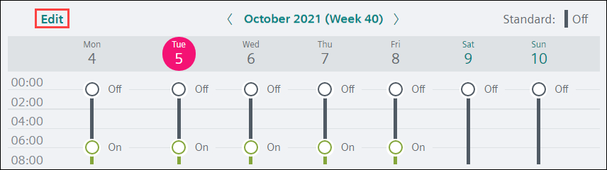
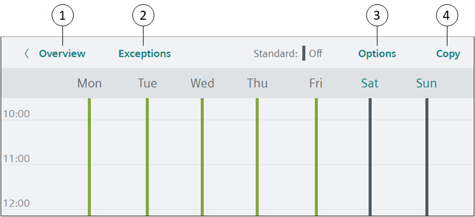
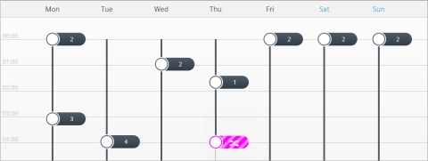
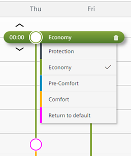

用户界面

Default Scheduler view
默认情况下，会显示选定的计划程序概述Scheduler目的。
点击Edit显示Edit模式。

Scheduler view in Edit mode
① | Overview |
② | Exceptions/Scheduler |
③ | Options |
④ | Copy |
Work area views
A switching point显示在工作区域中以指示值（模拟对象）或设置（二进制或多状态对象）更改的时间。
Analog object schedule
- Switching points display the value to which the referenced object(s) will be commanded.
- indicates a switching point that returns to the Schedule default

Binary or multistate object schedule
- The color of the switching point indicates the setting to which the referenced object(s) will be commanded.
- indicates a switching point that returns to the Schedule default
